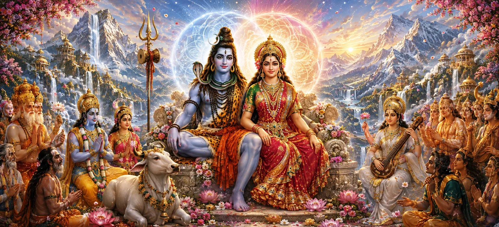

The sacred marriage of Lord Shiva and Goddess Pārvatī was far more than the union of two divine personalities. It represented the eternal harmony of consciousness and energy, wisdom and action, renunciation and compassionate participation in creation. Through their marriage, the divine couple revealed how household life can become a sacred path when founded upon devotion, mutual respect, righteous conduct, and spiritual purpose.
The marriage of Shiva and Pārvatī was destined long before its visible celebration. Pārvatī was the rebirth of Satī and the eternal Śakti of Shiva. Through devotion, austerity, and unwavering determination, she reunited with the Lord from whom she could never truly be separated.
Pārvatī’s marriage to Shiva was the fulfilment of years of disciplined worship and severe austerity. She remained devoted despite hardship, discouragement, and repeated tests. Her success demonstrates that sincere spiritual determination ultimately receives the grace of the Divine.
Lord Shiva remained eternally complete and beyond worldly attachment, yet He accepted married life for the welfare of creation. His marriage showed that spiritual perfection does not reject responsibility. True detachment allows one to participate in the world without becoming bound by it.
The gods had long awaited the union of Shiva and Pārvatī because it was essential for the restoration of balance throughout the three worlds. Their future divine son would possess the power required to defeat Tārakāsura and protect the gods, sages, and righteous beings.
Shiva and Pārvatī honoured one another as equal expressions of the Supreme Reality. Their companionship was founded upon trust, freedom, wisdom, affection, and shared purpose. Neither sought to diminish the other; together they revealed a more complete expression of divine power.
The marriage of Shiva and Pārvatī restores harmony between consciousness and creative energy.
Pārvatī’s sacred union with Shiva represents the fulfilment of unwavering devotion and discipline.
Their relationship demonstrates how two companions can support a shared spiritual and righteous purpose.
The divine marriage teaches that household life need not be opposed to spiritual realization. Responsibilities performed with devotion, honesty, self-control, and compassion can become powerful forms of worship.
A sacred household provides opportunities to practise patience, generosity, forgiveness, service, and protection. When every action is offered to the Divine, ordinary family life becomes a means of inner purification.
The glory of divine marriage lies not in external celebration but in the sacred purpose shared by two souls. When love is guided by wisdom, responsibility is strengthened by devotion, and companionship serves the welfare of others, married life becomes a path toward the Divine.
Those who remember the marriage of Shiva and Pārvatī with devotion are inspired to cultivate patience, fidelity, mutual respect, and spiritual companionship. The divine couple blesses sincere households with strength during difficulties and wisdom during moments of uncertainty.
Their example teaches couples to view challenges not as reasons for division but as opportunities to deepen understanding, practise forgiveness, and renew their shared commitment to righteousness.
On the highest spiritual level, the marriage of Shiva and Pārvatī symbolizes the union of still awareness with dynamic power. Consciousness provides direction, while energy enables manifestation. Together they sustain every movement and transformation within the universe.
This same harmony must be established within every seeker. Wisdom must guide action, strength must remain joined with compassion, and inner silence must support meaningful participation in the world.
“Divine marriage is the sacred harmony in which love serves wisdom, strength protects compassion, and two lives unite for a higher purpose.”
The marriage of Lord Shiva and Goddess Pārvatī reveals the sacred harmony of devotion, wisdom, responsibility, and spiritual companionship. Their union restored cosmic balance and demonstrated how household life can serve a divine purpose. Proceed to the next chapter to explore the deeper mystery of the eternal union of Shiva and Śakti.